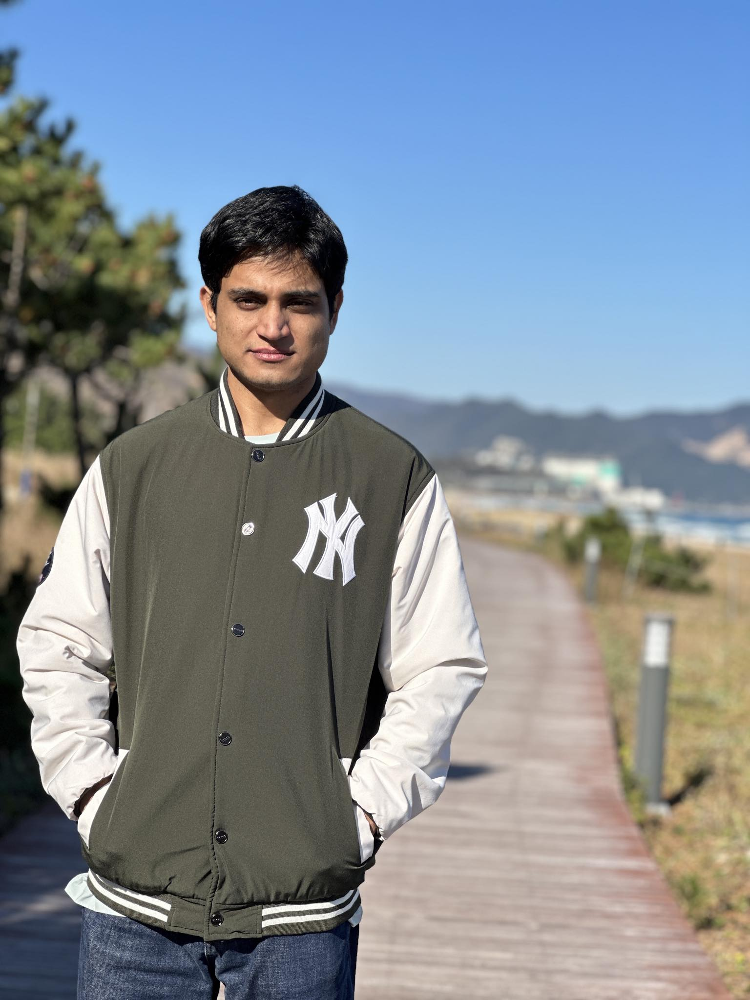
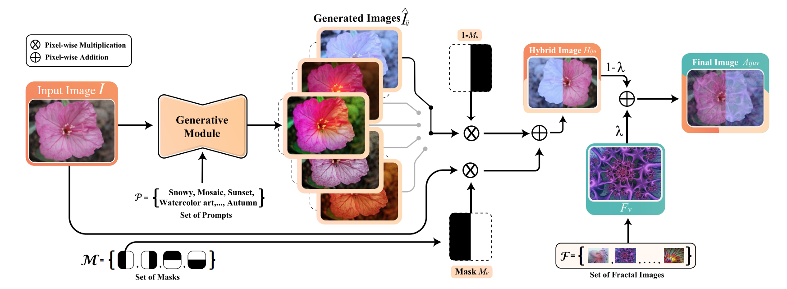
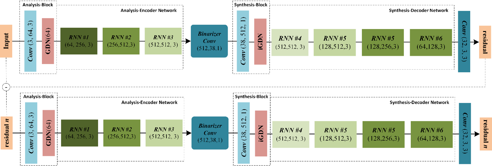
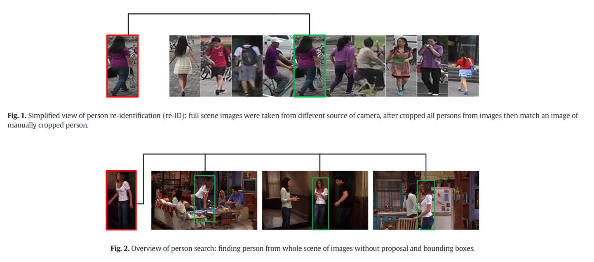

|  |
Muhammad NadeemFull-time AI Research Engineer, SpilabEmail: muhammad.nadeem23064 [at] gmail.com CV | Google Scholar | Github | Linkedin |
International Conferences
International Journals
Awards & Honors
- NeurIPS Support, Sponsored by Naver Labs Europe, DeepMind, and Google AI, 2021
- Full Tuition Fee Waiver, School of Computer Engineering, Sejong University, 2020
- Prof. Stipend, CVPR Lab, Sejong University, 2020
- Conference Travel Grant, Ministry of Planning Commission, Pakistan, 2020
Technical Skills
- IP Algorithms: Segmentation, Filter Design, Noise Removal, Compression, Super Resolution
- Object Detection: SSD, YOLO-NAS, YOLOX, Faster R-CNN, DETR, GroundingDINO, YOLOv8
- DL Techniques: Tracking, Optical Flow, Particle Filtering, Pose Estimation
- CV Algorithms: Image Classification and Detection, Tracking, Siamese Networks
- Software Control: JIRA, Agile, Scrum, GIT, Subversion
- Languages: Python, Keras, JAVA, Unix Shell Scripting
- Deployment: Docker, Kubernetes
- Editors: Visual Studio Code, PyCharm, Jupyter Notebook
- Operating Systems: WINDOWS 10, Ubuntu 18.04, Ubuntu 20.04, MAC OSX
- APIs: PyTorch, TensorFlow, Caffe, OpenCV, Flask, Django
Recent Research/Industrial Projects
-
High-Quality Video Generation from Diffusion Models (Text-2-Video), 2024 - Present
Designed identity-specific prompts and fine-tuned models for video generation. -
Image Restoration and Enhancement with GANs and Diffusion Models, 2024 - Present
Worked on image super-resolution, deblurring, in-painting, and debazing. -
Image Editing Instructions with Diffusion Models (Image-to-Image), 2023
Integrated Imagic, SINE, and LEDITS for high-resolution image editing. -
Foundation Multimodal Vision Language Models, 2023
Generated captions and evaluated models on various metrics. -
Vision Language Models for Unseen Domains & Domain Shift, 2023
Fine-tuned models to improve robustness and performed experiments on multiple datasets. -
Reliable Lightweight Real-Time Open-Vocabulary Object Detection, 2023
Investigated and fine-tuned models for state-of-the-art performance. -
Online Continual Learning with Blurry Data and Incorrect Labels, 2022
Developed a framework for diversity and purity in memory updates. -
Vision Transformer for General and Age-Invariant Face Recognition, 2021
Proposed a new ViT architecture and conducted experiments on face aging datasets. Academic Activities
- Academic Services
- Technical Volunteer - Advances in Neural Information Processing Systems (NeurIPS) 2021.
- Technical Volunteer - International Joint Conferences on Artificial Intelligence (IJCAI) 2021.
- Technical Volunteer - International Conference on Machine Learning (ICML) 2021.
- Technical Volunteer - International Conference on Learning Representations (ICLR) 2021
- Student Volunteer - IEEE Conference on Computer Vision and Pattern Recognition (CVPR) 2021
- Technical Volunteer - Association for the Advancement of Artificial Intelligence (AAAI) 2021
- Reviewer (International Journal)
- IEEE Transactions on Pattern Analysis and Machine Intelligence (TPAMI).
- International Journal of Computer Vision (IJCV).
- Computer Vision and Image Understanding (CVIU).
- Reviewer (International Conference)
- IEEE Conference on Computer Vision and Pattern Recognition (CVPR) 2019-2023.
- IEEE International Conference on Computer Vision (ICCV) 2019-2023.
- European Conference on Computer Vision (ECCV) 2020-2022.
- Conference on Neural Information Processing Systems (NeurIPS) 2020-2022.
- International Conference on Machine Learning (ICML) 2020-2023.
- International Conference on Learning Representations (ICLR) 2021-2023.
- Association for the Advancement of Artificial Intelligence (AAAI) 2020-2023.
- IEEE Winter Conference on Applications of Computer Vision (WACV), 2020.
- Moderator
- AI Deep Group on Facebook, 23.1K Members.
- Artificial Intelligence, Machine and Deep learning Group, 754.4K members.
- Deep Learning and Machine Learning, 109.5K Members.
- Thailand Deep Learning, 19.8K Members.
- Computer Vision, 129.6K Members.
- Computer Vision and Machine Learning, 17.5K Members.
Summer and Winter Schools
- OxML School, Oxford Machine Learning Summer School, 2022
- NYU AI School, New York Artificial Intelligence School, USA, 2022
- MLSS, Machine Learning Summer School, Taipei, Taiwan, 2021
- EEML, Eastern European Machine Learning Summer School, 2021
Q/A Mentorship Sessions
- Yingzhen Li, Mentor at ICML, Imperial College London
- Evan Shelhamer, Mentor at ICML, DeepMind, Google
- Wei-Lun (Harry) Chao, Mentor at ICLR, Ohio State University
- Shakir Mohamed, Mentor at ICLR, DeepMind, Google
- Emmanuel Kahembwe, Mentor at ICLR, VDE (UK & Ireland)
|  |
Brest Cancer Recognition Through Visual Intelligence Assisted Lightweight Con-
volution Neural Network Muhammad Nadeem, Haseeb Khan, Wisal Khan, L. Minh Dang, Nguyen Le Quan, Hyeonjoon Moon The 9th International Conference on Next Generation Computing (ICNGC 2023) [Paper] |
Brest Cancer Recognition Through Visual Intelligence Assisted Lightweight Con-
volution Neural Network

|
Wheat Diseases Recognition Using Optimal Features Assisted Modified Soft Attention Network Muhammad Nadeem, Aqib Khan, Ji-Won Kim, L. Minh Dang, Hyeonjoon Moon The 15th International Conference on ICT Convergence [Paper] |
|  |
Machine Learning for Mental Health: A Systematic Study of Seven Approaches for Detecting Mental Disorders Muhammad Nadeem, Junaid Rashid, Hyeonjoon Moon, Arailym Dosset The 38th International Technical Conference on Circuits/Systems, Computers and Communications [Paper] |
|  |
Visual Intelligence in Smart Cities: A Lightweight Deep Learning Model for Fire Detection in an IoT Environment Muhammad Nadeem, Naqqash Dilshad, Norah Saleh Alghamdi, L Minh Dang, Hyoung-Kyu Song, Junyoung Nam, Hyeonjoon Moon MDPI Smart Cities [Paper] |
|
VPBR: An Automatic and Low-Cost Vision-Based Biophysical Properties Recognition Pipeline for Pumpkin L. Minh Dang, Muhammad Nadeem, Tan N. Nguyen, Han Yong Park, O New Lee, Hyoung-Kyu Song, Hyeonjoon Moon MDPI Plants [Paper] |
|
|
LADNet: A Lightweight Attention-Driven Network for Accurate Wheat Diseases Recognition Muhammad Nadeem, Habib Khan, L. Minh Dang, Muhammad Islam, Hyeonjoon Moon IEEE Access (Under Review) |
The design is taken from Prof. Sunghoon Im, DGIST.